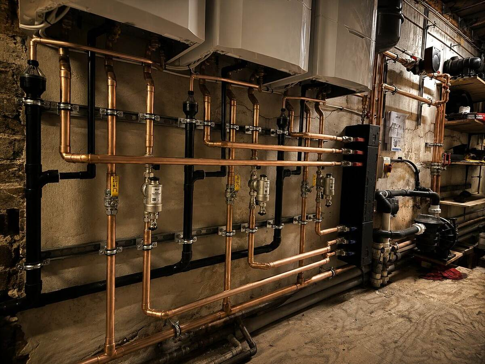

Does your heating system need cleaning?
Poor circulation and cold radiators can have several causes. Cleaning should follow diagnosis, not replace it.

Common warning signs
Cold areas on radiators, noisy components, repeated pump problems, dirty water and blocked strainers can point towards contamination. Balancing faults, undersized pipework or failed controls can produce similar symptoms.
What sludge and magnetite do
Corrosion products can restrict waterways, reduce heat transfer and damage pumps, valves, boilers and heat exchangers. Modern equipment often has narrower waterways and is particularly dependent on suitable system water.
Choose the method after inspection
The appropriate work may range from local flushing and filter cleaning to chemical cleaning or powerflushing. Severely restricted or poorly arranged pipework can require physical alteration rather than more aggressive flushing.
Protect the result
After cleaning, correct inhibitor levels, air removal, filtration and commissioning help reduce repeat problems. Testing and recording the condition of the system provides a clearer handover.
Heating not circulating properly?
CA2 can diagnose the cause before recommending cleaning or repairs.
Book a system assessmentExplore plumbing and heating services →